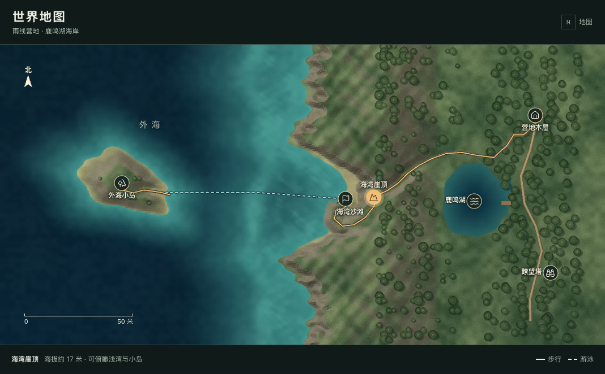
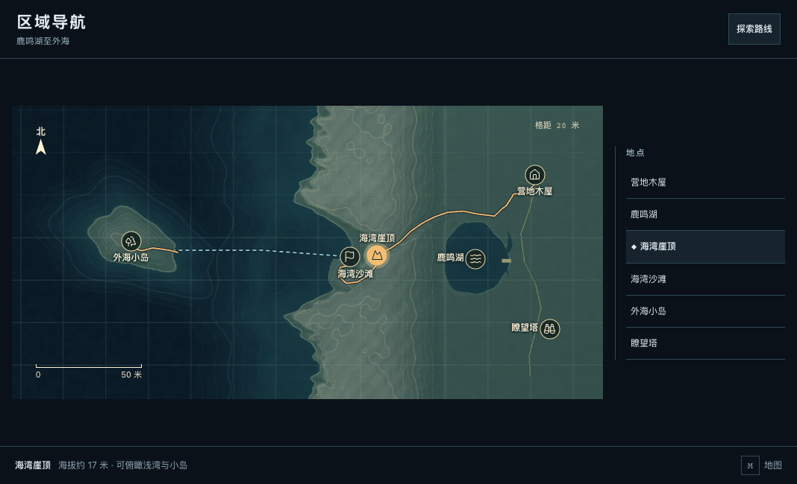
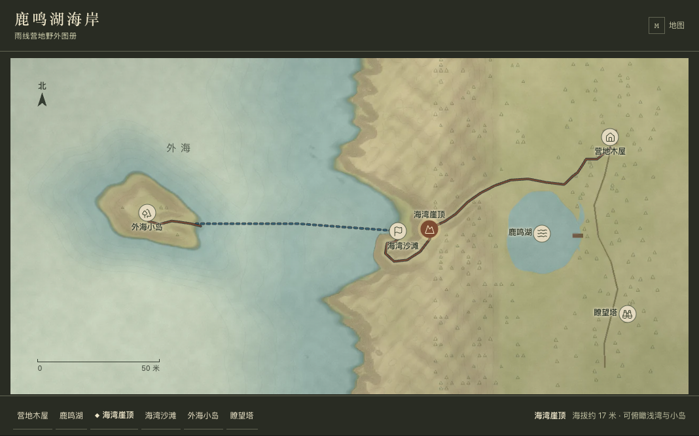

<!doctype html>
<html lang="zh-CN">
<meta charset="utf-8">
<meta name="viewport" content="width=device-width,initial-scale=1">
<title>雨线营地地图样稿</title>
<style>
:root{color-scheme:dark; font-family:system-ui,"PingFang SC",sans-serif; color:#eee8d7; background:#151b1a}
body{max-width:1100px; margin:auto; padding:28px 18px 50px}
h1{font-size:clamp(22px,4vw,32px); margin:0 0 18px}
nav{display:flex; flex-wrap:wrap; gap:10px 20px; margin-bottom:25px}
a{color:inherit; text-underline-offset:4px}
section{margin:0 0 28px}
h2{font-size:17px; font-weight:600; margin:0 0 10px}
img{display:block; width:100%; height:auto}
</style>
<main>
<h1>雨线营地 · 地图样稿</h1>
<nav aria-label="地图样稿"><a href="#aerial">航拍地形</a><a href="#topographic">战术等高线</a><a href="#field">野外图册</a></nav>
<section id="aerial"><h2>航拍地形</h2><a href="aerial.png"></a></section>
<section id="topographic"><h2>战术等高线</h2><a href="topographic.png"></a></section>
<section id="field"><h2>野外图册</h2><a href="field-atlas.png"></a></section>
</main>
</html>
